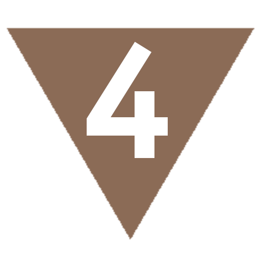
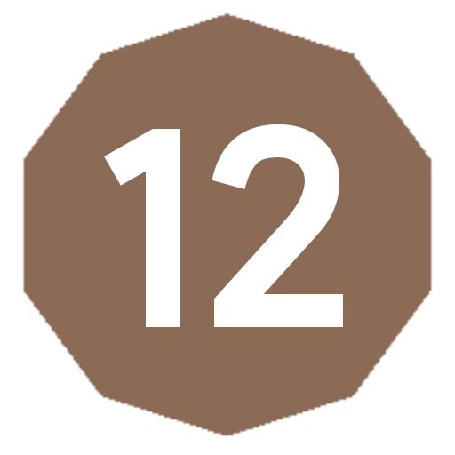
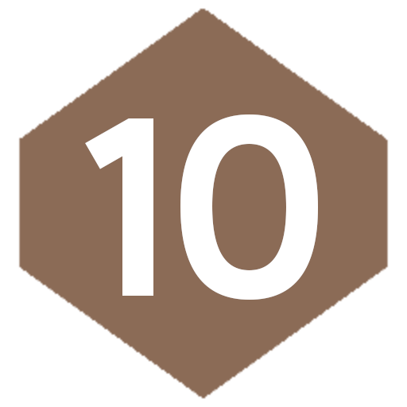

Характеристики
Любое существо описывается четырьмя базовыми характеристиками:
- Телосложение
- Ловкость
- Интеллект
- Диалектика
Каждая характеристика может принимать значение от  до , и может быть изменена только на время.
Относительные значения
Не смотря на то, что человек с телосложением считается невероятно сильным и выносливым, существо другого типа, например, Дракон с телосложением обладает на много большей выносливостью и силой относительно человека. Поэтому, при определении характеристик следует учитывать относительное значение внутри типа существ, а не снаружи.
Рассчёт относительного значения
В обычном случае при рассчёте бонусов от характеристик следует учитывать абсолютную шкалу типа существ от до , где:
- - существо самого слабого типа, с поделённым на треть общим значением бонусов
- - существо меньшего типа с половинным значением бонусов характеристик
- - существо нормального типа с обычным значением бонусов
-  - существо большего чем типичный размер и удвоенным значением бонусов
- - существо огромной силы с увеличенными в три раза значениями бонусов характеристик
Состязания
Тип проверки
При состязании существ одинакового типа значение костей считаются абсолютными, если же состязаются существа разного типа, то у существа меньшего типа есть возможность выиграть состязание только при условии, что выпавшее значение будет выше, чем dR+DdR, где R - это кость типа противника, D - разница рангов по модулю.
Чтобы существо меньшего ранга проиграло проверку само, выброшенное значение должно быть меньше чем dR-DdR, в то время как значение противника должно быть больше.
Эти же правила работают для Толпы, применяясь к результату броска.
Например, если Человек (существо нормального типа ) с силой соревнуется с Огром (существом ) силой , то, чтобы выиграть состязание он должен выбросить минимум
20(+1) чтобы победить, при условии, что значение будет больше, чем выпавшее значение Огра. А чтобы Огр сам проиграл состязание, ему нужно выбросить <16(+1).
Таким образом, "чистое" состязание характеристик не может быть выиграно существом меньшего типа, но при состязаниях навыков это становится возможным.